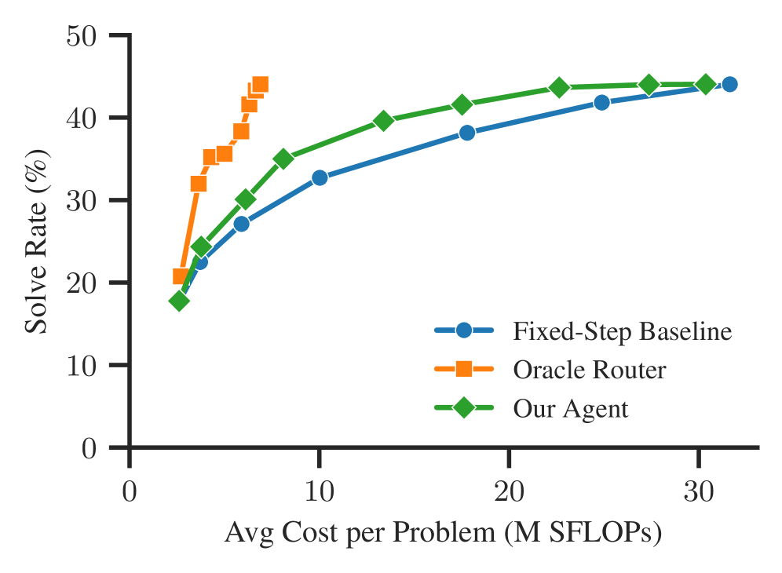

An action-routing agent decides whether to continue or restart Lean proof attempts, allocating compute across lemma decompositions on PutnamBench.
Abstract
Large language models (LLMs) are increasingly used in workflows for generating formal proofs in Lean. These workflows often decompose problems into smaller lemmas, sample many proof attempts, and use compiler feedback to guide search. However, they can be prohibitively expensive, often spending substantial compute on attempts that ultimately fail. In this work, we address this problem with an action routing agent that consists of a data plane and a control plane. The data plane generates natural-language lemma decompositions, formalizes them in Lean, and samples proof attempts for the resulting theorem and lemma targets. The control plane observes previous failed Lean attempts, estimates both the likelihood of success and cost of another attempt, and decides whether to continue proving the current target or restart from a new breakdown. On a subset of PutnamBench, our agent decreases the cost by $25.8\%$ over a fixed-step baseline on average, preserving performance while using substantially less compute. These results suggest that failed Lean trajectories provide actionable signals for cost-aware resource allocation in agentic theorem proving.
Problem
Agentic theorem provers in Lean scale by sampling many proof attempts per problem, but they spend substantial compute on attempts that ultimately fail, making them prohibitively expensive.
Approach
The authors build an action routing agent with a data plane and a control plane. The data plane decomposes problems into natural-language lemma breakdowns, formalizes them in Lean, and samples proof attempts. The control plane observes failed Lean attempts, extracts features (proof similarity, error diversity, attempt count), and estimates likelihood of success and cost of another attempt. Based on a cost-quality tradeoff threshold, it decides whether to continue proving or restart from a new breakdown.

Figure 3 : Cost-quality curve of our agent compared with the fixed-step baseline and the zero-noise oracle router.
Results
On a subset of PutnamBench (85 problems), the agent decreases cost by 25.8% over a fixed-step baseline on average while preserving performance, and achieves a 7.8% accuracy improvement at parity cost. An ablation shows that using all three input features outperforms any subset.
Figure 3 : Cost-quality curve of our agent compared with the fixed-step baseline and the zero-noise oracle router.